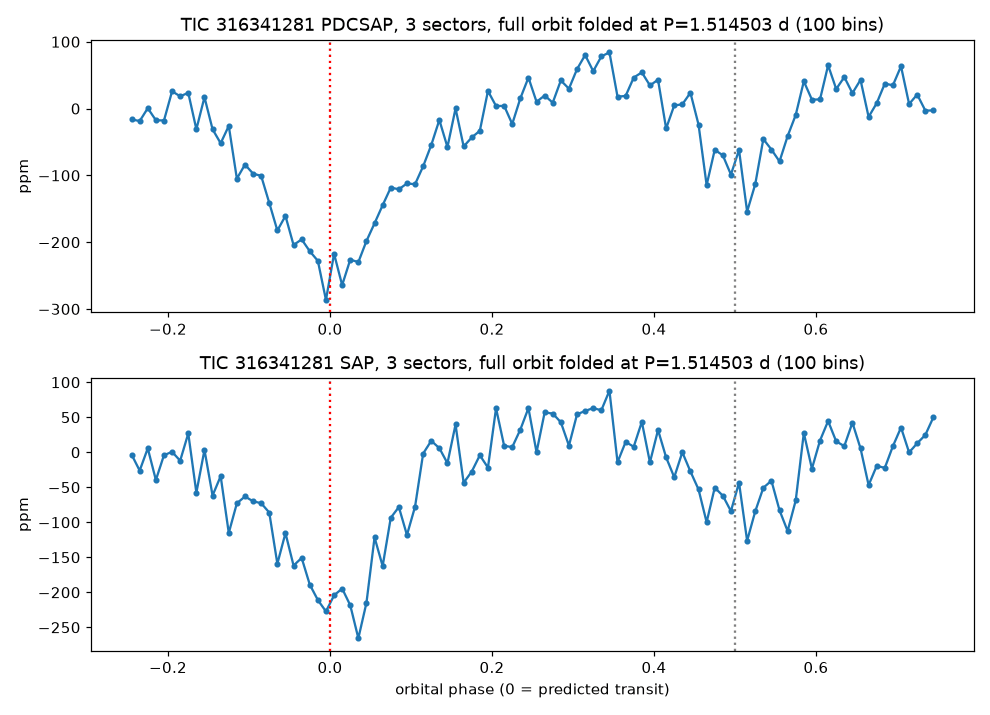
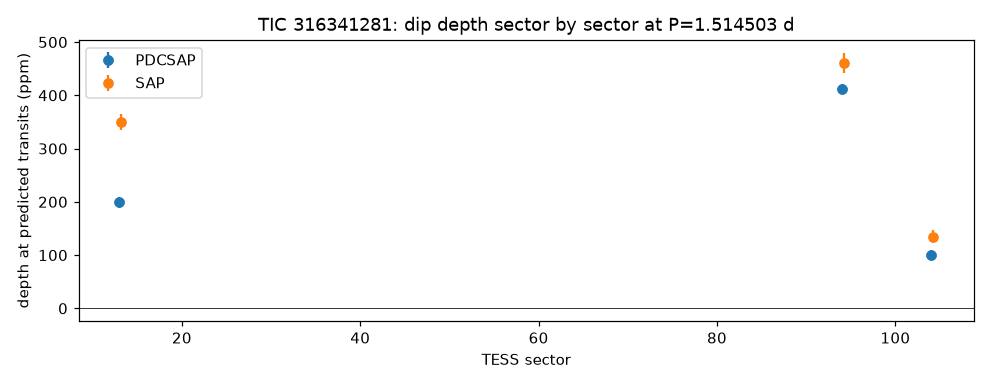

TRANSMISSION #025 ·
Deep dive on TIC 316341281: a strong signal from a star that wobbles
Follow-up on TIC 316341281, the strongest pass of the first sector 104 draw.
The star is magnitude 8.1, about 7,000 K and twice the Sun's size, in a crowded field with 277 Gaia sources within 90 arcseconds. The batch search found a 153 ppm dip every 1.5145 days, five hours long, 44 transits, signal-to-noise 28.7. Odd and even dips matched (149 and 157 ppm). On paper that's a planet about 2.7 Earth radii on a very tight orbit. The diagnostic plot told a different story. The panel at the halfway point shows a dip almost as deep as the main one. The second signal the batch found was the same period shifted by half a cycle, and the periodogram is a comb of peaks at 0.76, 1.51, 2.27 and 3.03 days.
The deep TLS search, on the same three sectors (13, 94 and 104), put its strongest peak at 0.7539 days, exactly half the batch period, and flagged its shape as stellar variability. Its second signal, 202 ppm every 6.3 days, has signal-to-noise 8.2 and folds into a broad, shallow sag. That's leftover wobble from the star rather than a transit.
Folding the whole 1.51-day cycle shows the problem plainly. There's a broad V-shaped dip of about 280 ppm lasting around nine hours and a smaller one of about 120 ppm half a cycle later, joined by a rolling baseline. A planet would make a short flat-bottomed dip and leave the rest flat. The depth also wanders a lot: 199, 412 and 100 ppm in the cleaned light curves for the three sectors, and 350, 461 and 135 ppm in the raw ones.


This is a hot F star varying on a roughly 0.75-day rhythm, or a close pair of stars pulling each other out of shape. Neither makes it a planet host. No bright neighbour is close: the brightest within 90 arcseconds is G=13.7 at 84 arcseconds and would need a 2% eclipse. Gaia sees the star as well behaved (RUWE 0.84), and ExoFOP and the NASA Exoplanet Archive have nothing on or near it. Marked probably false positive.
Every signal, explained (2)
Tap a row to open it. Sorted by signal strength.
TIC 316341281#1Vetted out: variable star 0.754 d · 142 ppm · SNR 23.7 · ~2.6 R⊕
Failed the automatic checks. Here's why:
- Variable star. Between the dips the brightness doesn't sit flat. The star itself is changing (spots rotating into view, pulsations, or a stretched-out binary), and the search latched on to those wiggles.
TIC 316341281#2Passed the robots, failed the eyeball 6.315 d · 202 ppm · SNR 8.2 · ~3.1 R⊕
This one got through every automatic check, which is rare. Then Kepler looked at it by eye and followed it up, and it didn't hold up.
Kepler’s eyeball check: weak secondary deep signal, SNR 8.2 below ~10, SDE 10.5 barely above the forest, fold is a broad shallow sag several hours wide rather than a 1.4 h box, on a star dominated by ~0.75 d variability -> leftover variability; actual folder results/deep_TIC316341281 (batch_folder=results/deep so the Kepler Log matches deep runs)
Candidates table
| TIC | # | Status | Vet | P (d) | Depth (ppm) | Dur (h) | SNR | SDE | N | R⊕ | Flags |
|---|---|---|---|---|---|---|---|---|---|---|---|
| 316341281 | 1 | NEW_CANDIDATE | fail | 0.7539 | 142 | 2.17 | 23.7 | 21.7 | 87 | 2.6 | VARIABLE_STAR_SHAPE |
| 316341281 | 2 | NEW_CANDIDATE | PASS | 6.3154 | 202 | 1.36 | 8.2 | 10.5 | 9 | 3.1 | - |
Diagnostic plots
 TIC 316341281 #1 · Vetted out: variable star
TIC 316341281 #1 · Vetted out: variable star TIC 316341281 #2 · Passed the robots, failed the eyeball
TIC 316341281 #2 · Passed the robots, failed the eyeballFull pipeline report
Planet-hunter report
Generated 2026-11-03 10:18 UTC by hunt.py v1.0.0.
Stars processed
1 stars total: 1 done
Signals found: 2 (1 new and passing vetting, 1 new but failing vetting, 0 matching known planets/TOIs/CTOIs).
New candidates that passed the automatic checks
These are the ones to look at first. Passing the automatic checks does not make something a planet. Open each plot and follow the eyeball checklist in BOT_BRIEF.md before telling anyone about it.
| TIC | # | P (d) | depth (ppm) | dur (h) | SNR | SDE | N tr | Rp est (Re) | flags | note | plot |
|---|---|---|---|---|---|---|---|---|---|---|---|
| 316341281 | 2 | 6.31541 | 202 | 1.36 | 8.2 | 10.5 | 9 | 3.14 | - | no catalogued planet/TOI on this star | png |
New signals that failed vetting
Usually eclipsing binaries, stellar variability or instrument noise. Worth a glance, rarely more.
| TIC | # | P (d) | depth (ppm) | dur (h) | SNR | SDE | N tr | Rp est (Re) | flags | note | plot |
|---|---|---|---|---|---|---|---|---|---|---|---|
| 316341281 | 1 | 0.75386 | 142 | 2.17 | 23.7 | 21.7 | 87 | 2.63 | VARIABLE_STAR_SHAPE | no catalogued planet/TOI on this star | png |
Signals matching something already catalogued
A good sanity check: if the pipeline recovers known planets, it is working.
none
Stars with errors
none
Caveat
A NEW_CANDIDATE here is only a candidate. Most automatic detections in TESS data turn out to be eclipsing binaries (often a nearby star blended into the same pixels), stellar activity or systematics. Confirming a planet needs pixel-level checks, follow-up photometry, and usually spectroscopy. Promising, carefully checked signals can be shared on ExoFOP (as a CTOI) or with Planet Hunters TESS.